Jazz
Musica e ritratti sul palco
I grandi nomi del jazz colti durante concerti e session. Luci di scena, strumenti e espressioni che raccontano la passione e l'energia della musica dal vivo.
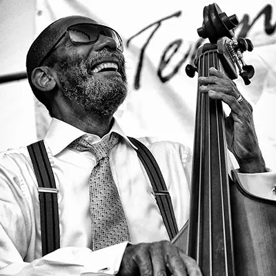
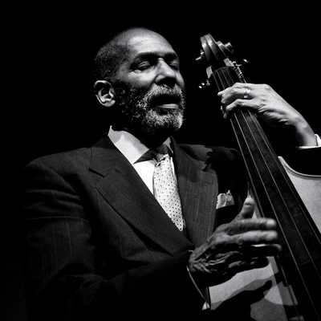
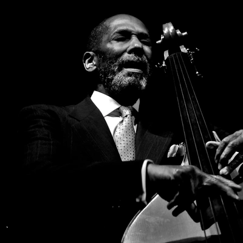
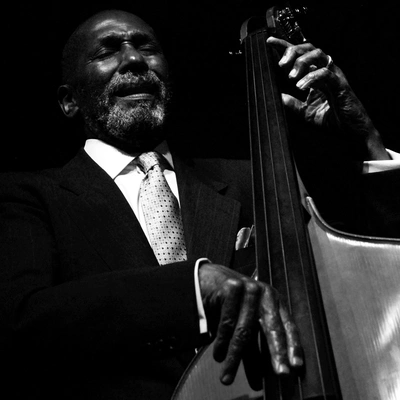
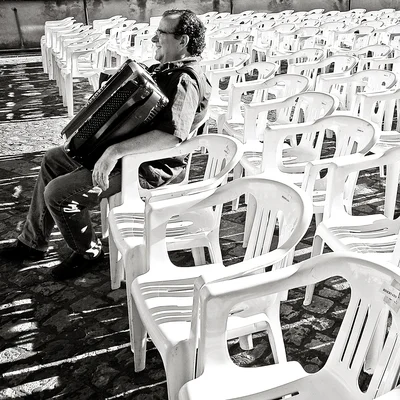
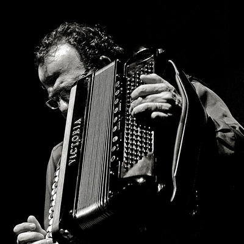
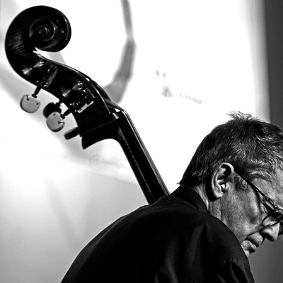
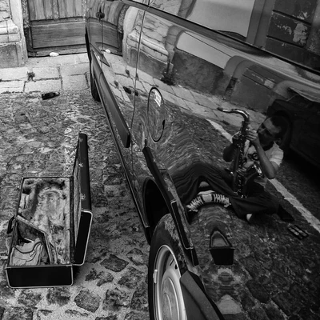
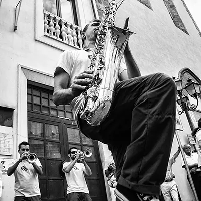
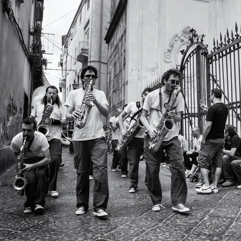
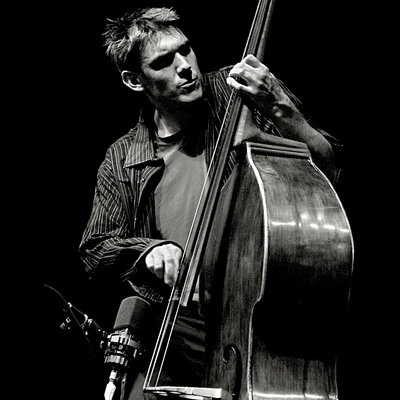
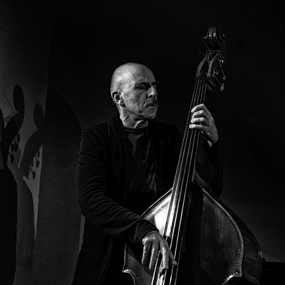
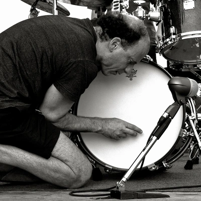
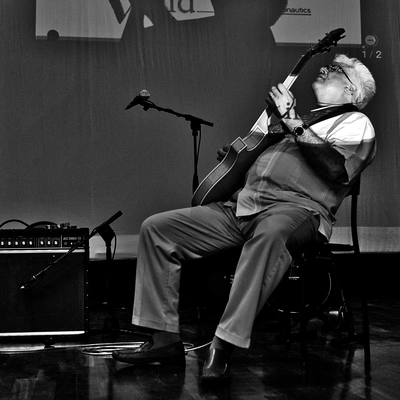
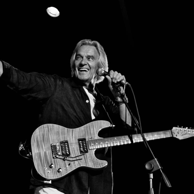
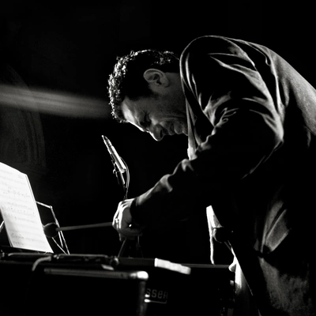